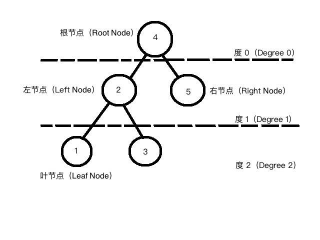
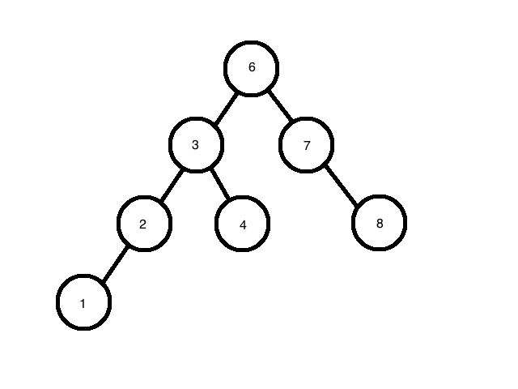
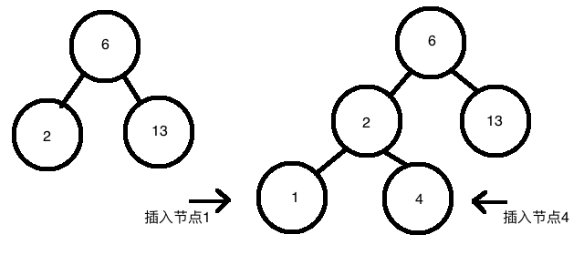
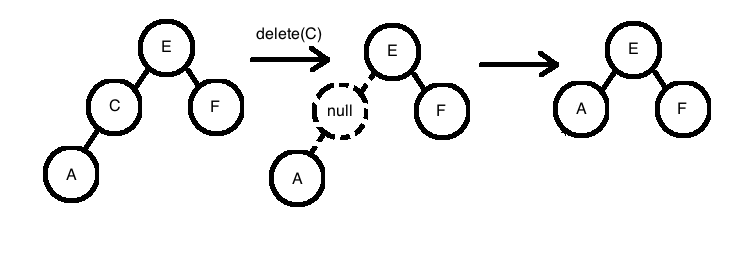
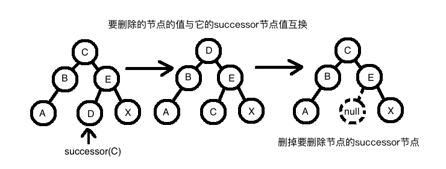
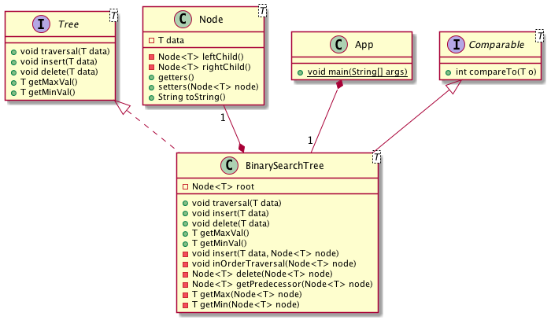

二叉树学习与实现(Binary Search Tree)
二叉树，也叫二叉搜索树，是经典的数据结构。大学的时候没有好好学，没想到天朝面试对数据结构和算法这一块情有独钟，于是不得不重温一下这些知识。在Udemy上报了一个课程，几堂课看下来觉得数据结构还是很有意思，很值得推敲的。
1 二叉树的基本原理

- 如图二叉树就是最多有两个儿子（children）的节点（node）这有点儿像现在的二胎政策。
- 这两个儿子通常被称为左节点（left node）和右节点（right node）。
- 没有爹的节点叫做根节点，因为它是最先插入的节点，后续插入的数据以根节点为起点插入。
- 没有儿子的节点叫做叶节点（leave node），它们处于二叉树每条分支往下可到达的边缘处。
- 每个节都有自己的身家（data），二叉树根据身价的大小来决定此节点放置的位置。
- 身价小于当前节点放置于左，否则（身价大于等于当前节点）的放置于右。
- 二叉树也有身高（叫做度 Degree）根节点不算身高（Degree 0）往下每叠加一层，身高加上1。
2 二叉树的功能／特性
- 遍历（traverse）：根据相应的顺序递归遍历二叉树的所有节点
- 插入（insert）：根据数据的大小从根节点开始插入数据
- 删除（delete）：删除拥有相应数据的节点
- 最大值（max）：找出二叉树中的最大值
- 最小值（min）：找出二叉树中的最小值
2.1 二叉树的遍历
- 分为先序遍历（pre-order traversal）、中序遍历（in-order traversal）和后续遍历（post-order traversal）
- 先序遍历：先老子（访问跟节点），然后左儿子（先序遍历左子树），最后右儿子（先序遍历右子树）
- 中序遍历：先左儿子（中序遍历左子树），然后老子（访问跟节点），最后右儿子（中序遍历右子树）
- 后续遍历：先左儿子（中序遍历左子树），然后右儿子（中序遍历右子树），最后老子（访问根节点）

用上图为例，三种遍历的结果为：
先序遍历：6，3，2，1，4，7，8 中序遍历：1，2，3，4，6，7，8 后序遍历：1，2，4，3，8，7，6
二叉树的遍历有什么意义呢？
- 根据知乎上的回答：先序可以很方便地形成一条搜索路径，中序遍历BST的时候可以得到一个有序序列，后序可以用来计算一颗算数表达式树。
- 根据上面的例子反馈中序遍历最容易看出来，便是根据二叉树数据结构中自动排序的特点，以节点的大小顺序遍历二叉树。先序遍历是以类似于深度优先的方式从左子树到右子树遍历二叉树的每一个节点。后序遍历的特点符合普通数学算数式的特点，左右两个子节点存放值或者子算数式，根节点和每一个父节点储存算术表达式（如+，-，*，／）这样通过一次后序遍历就可以算出算术表达式的值。
2.2 二叉树的插入
- 二叉树在执行插入的时候，新的节点只能存放在位置为空的地方。
- 然后根据二叉树的基本原理，比当前节点小的放置在左子节点处，反之放置在右节点处。

如上图所示，我们先插入一个值为1的节点，根节点是6（非空）所以要对插入节点的值与根节点的值来决定新插入的节点要放在根节点的左子树还是右子树中。根据二叉树左小右大的基本原理节点1要放在右子树，但是右子树已经有了节点2（非空），那需要继续对比节点的值来决定节点1插入的位置。直到即将插入的位置为空时插入过程才结束。经过对比节点1应该插入到节点2的左节点处。同理，节点4应该插入到节点2的右节点处。
2.3 二叉树的删除
二叉树的删除有三种情况：

情况一：删除的节点没有儿子，我们直接将此节点删除（设为null）

情况二： 删除的节点有一个儿子，我们首先要把它的孩子过继给他的父节点，然后再将其删除

情况三：删除的节点有两个儿子，我们首先将此节点与他的successor或predecessor的数据（data）互换，然后删掉它的successor或predecessor。successor指的是删除节点左节点树中最大的节点。而predecessor指的是删除节点又节点树中最小的节点。
2.4 二叉树的最大值和最小值
根据二叉树的特点：
- 二叉树的最小值总是处于树的最左侧
- 二叉树的最大值总是处于树的最右侧
为什么使用二叉树？
- 二叉树在执行插入时就已经进行了排序，不需要额外的算法去执行排序。
- 二叉树在平衡的状态下的增删查减的时间复杂度都为O(log(n))/O(log2(n)，效率很不错哦。至于为什么是相对平衡的状态下表现才好呢？假设你有一个二叉树，你依次插入数据为1，2，3，4的节点，那么此二叉树的形状跟一个链表（link list）是一样的。如果我们要查找一个数据，我们需要遍历整个二叉树，如果我们有N个节点，它的时间复杂度就变成了O(n)。根据链表的结构特点，在执行插入和删除动作的时候，它的时间复杂度为O(1)。那么二叉树在平衡状态下为什么又是O(log(n))呢？我们想象一下，当一个二叉树平衡分布的时候，根据二叉树的排列特点我们对其进行相应的增删查动作时，都只需要遍历一半（想想二分法）因为遍历节点的数量与总节点的规模n的比例为log2(n)，所以其时间复杂度也为log2(n)。（看来我还需要研究一下时间复杂度）
二叉树的性能总结
Average Case
| Access | Search | Insert | Delete |
|---|---|---|---|
| O(log(n) | O(log(n) | O(log(n) | O(log(n) |
Worse Case
| Access | Search | Insert | Delete |
|---|---|---|---|
| O(n) | O(n) | O(n) | O(n) |
二叉树的实现

- Tree 接口：定义树的基本功能／特性，包括遍历、增、删、查、最大／最小值。
- Node 类：定义每一个节点所具备的属性，如数据、左节点、右节点。
- BinarySearchTree 类：继承Tree接口，对二叉树的每个功能进行具体实现。
- App 类：测试类。
(to be continue)